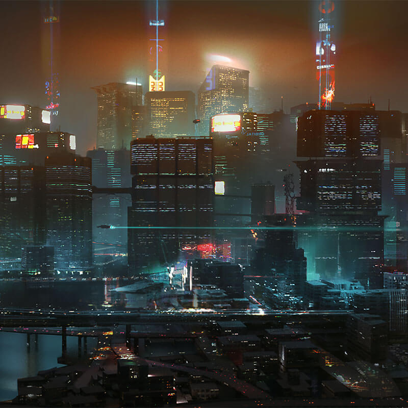
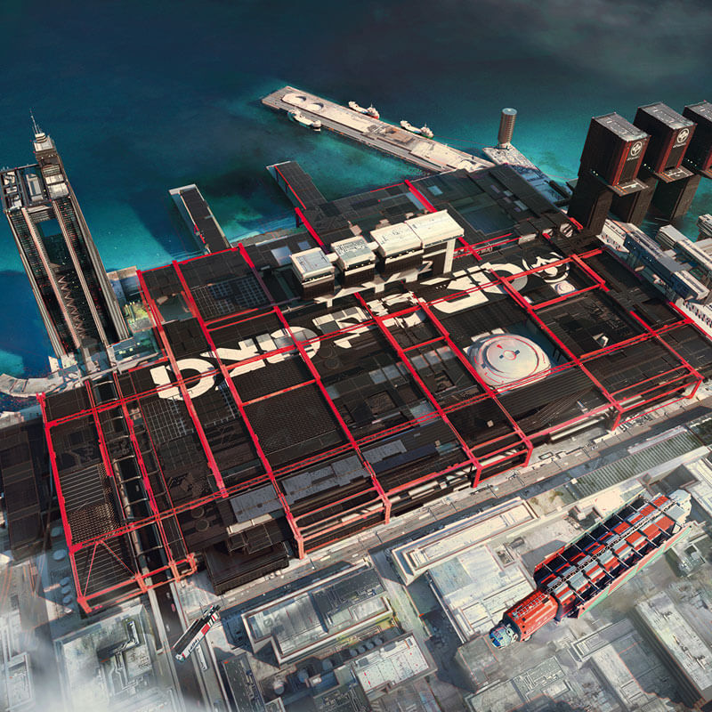
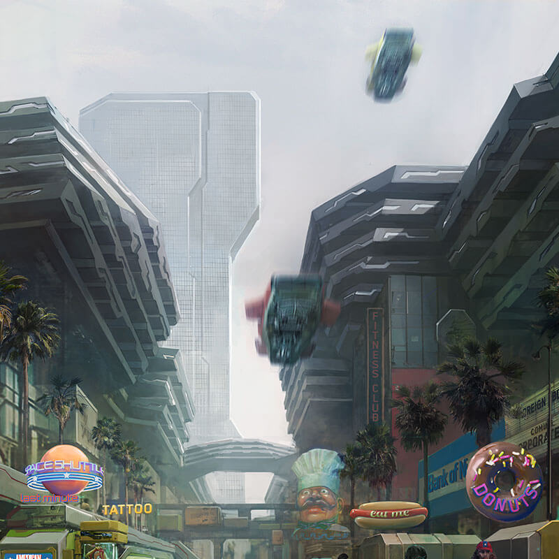
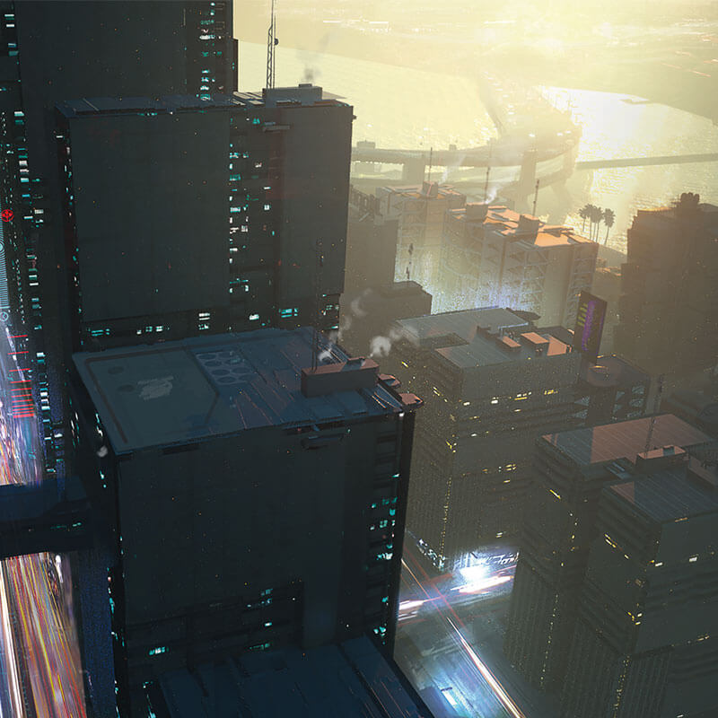
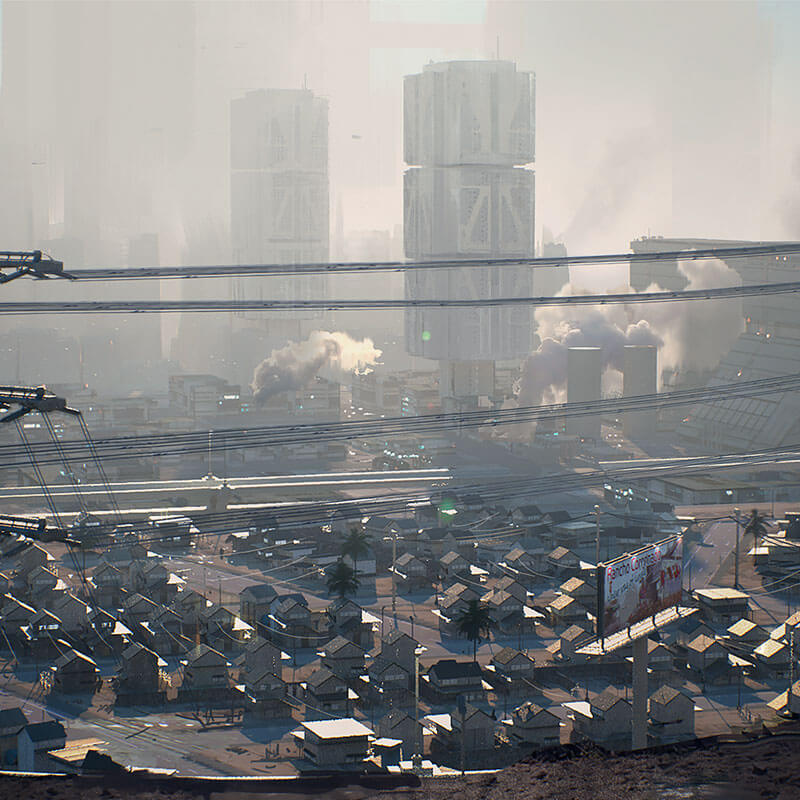
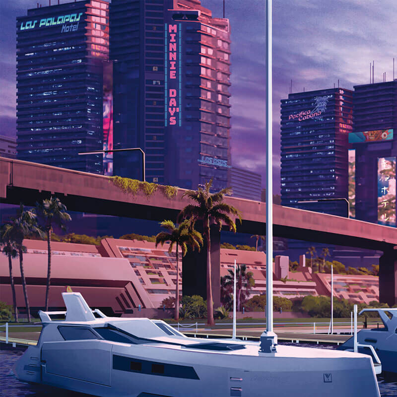
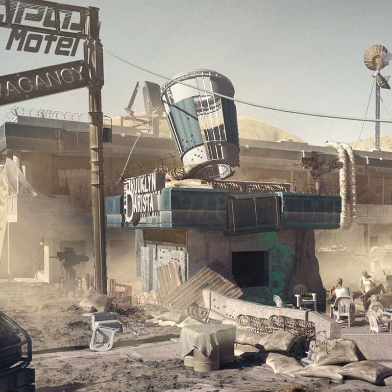

Этот сайт поможет и тем, кто попал в Найт-Сити впервые, и тем, кто жил
здесь
ещё
со времён
правления Элизабет Кресс. Посещайте самые интересные места города, ознакомившись с нашей подборкой
достопримечательностей. Удивляйте друзей интересными фактами, прочитав об истории Найт-Сити и его
районов.
Пользуйтесь системой МОСТ, ориентируясь на наш краткий обзор. Веселитесь только в престижных районах
и
избегайте
банд, следуя советам по безопасности от полиции города.
История Найт-Сити началась с мечты одного человека — предпринимателя Ричарда Найта. В конце XX века Найт задумал построить город будущего, свободный от старых предрассудков и не ограниченный бессмысленными запретами.
Заручившись поддержкой трёх крупнейших мировых корпораций, Найт начал строить свой идеальный город в заливе Коронадо. Когда Соединённые Штаты Америки начали распадаться, предприниматели и инвесторы потянулись в мегаполис будущего, который развивался небывалыми темпами. Влиятельное антирыночное лобби и завистники Найта делали всё, чтобы сорвать его планы. Это противостояние закончилось тем, что визионер был убит неизвестными в своём собственном доме. Однако его творение продолжило жить, уже под новым именем — в честь погибшего создателя город переименовали в Найт-Сити Город справился с последствиями чудовищных катастроф, в том числе ядерного взрыва на площади Корпораций, причём сделал это без помощи трусливого национального правительства. Стойкость Найт-Сити, успешного и процветающего города, продолжает вдохновлять мир и по сей день.
ПРЕДИСЛОВИЕ ОТ НАШЕГО МЭРА
Когда я впервые баллотировался в городской совет Найт-Сити, я изнашивал по паре «Бандиттос» за неделю. Я обходил улицу за улицей, мегабашню за мегабашней. Я многое увидел и ещё больше услышал, и в итоге решил, что знаю город как свои пять пальцев. Когда мне показали этот сайт, стало ясно, как сильно я заблуждался. На каждой странице было что-то, чего я не знал. Мне даже стало стыдно портить сюрприз вам, жители и гости нашего славного города. Впрочем, большую часть его тайн вам предстоит раскрыть самим.
В отличие от большинства современных мегаполисов, Найт-Сити дружелюбен к пешеходам — вы можете дойти пешком практически в любое место. Впрочем, это далеко не самый быстрый, безопасный и стильный способ передвижения. Ниже мы предлагаем альтернативы.
АВТОМОБИЛИ
Отличная новость для автовладельцев: вы можете парковаться где угодно. От платных парковок власти отказались
ещё в 2060-х, отчасти из-за нападений на подрядчиков, работавших со стартапом «Как часы», который
контролировал оплату парковок.
Если вы хотите приобрести автомобиль, в салонах найдутся модели на любой вкус и кошелёк. Станции CHOOH2
расположены по всему городу, а качество их услуг контролирует отраслевая комиссия — мошенники больше не
смогут наполнить ваш бак сладкой водой.
МОСТ
МОСТ (Макросистема общественного скоростного транспорта) — пожалуй, лучший способ перемещения по городу. МОСТ перевозит тысячи людей ежедневно: во-первых, проезд стоит сравнительно недорого, а во-вторых, станции макросистемы есть почти в каждом уголке Найт-Сити, поэтому те, у кого нет денег на такси, всегда смогут доехать до дома, где бы он ни находился.
ТАКСИ
Мы рекомендуем транспортную службу «Деламейн»: надёжные автомобили под управлением ИИ доставят вас куда угодно за разумную плату.
ЦЕНТР ГОРОДА
Огромные небоскрёбы, отбрасывающие тень на бескрайний лабиринт улиц. Неоновые
огни сцены, где слились в танце плоть и металл. Лучи света от прожекторов и огромные рекламные щиты,
между которыми, словно рыбы в воде, плывут массивные ави. Это центр Найт-Сити, его сердце, его
сбывшаяся
мечта. Посреди центра раскинулась площадь Корпораций — особая, свободная от внешнего воздействия
зона,
власть над которой принадлежит только корпорациям.
Работникам делового квартала есть где отдохнуть после тяжёлой рабочей недели. Здесь расположены
самые
шикарные отели, роскошные рестораны и популярные клубы. Надевайте удобную обувь, берите кредитный
чип и
идите развлекаться. Если вы в Найт-Сити впервые, начните погружение в ночную жизнь с бара «Седьмой
круг
ада», открытого бывшим наёмником. Здесь вы окунётесь в атмосферу бунтарского гламура и ощутите себя
вольным стрелком, который попивает фирменные коктейли в ожидании нового заказа. Главное, не забудьте
после этого зайти в сувенирный магазинчик!
УОТСОН

В 2023 году, когда центр Найт-Сити оказался разрушен ядерным взрывом, соседний Уотсон стал ковчегом
для потрясённых, но не сломленных жителей города. К 2050-м годам этот район вновь оказался на
периферии, но в период упадка у Уотсона открылось второе дыхание: здесь возродилась старая
американская мечта. Сюда начали стекаться предприимчивые мигранты из разных уголков мира, которым не
терпелось взяться за работу. Конечно, их выручка не могла сравниться с биржевой стоимостью закрытых
заводов, зато каждую лачугу и улочку Уотсона наполнило самое яркое из человеческих чувств: надежда
на процветание.
Отдельно нужно упомянуть микрорайон Кабуки, когда-то населённый выходцами из Японии. В этом тугом
клубке переулков, расположенном неподалёку от старого медцентра, всегда людно и грязно, но именно
здесь можно купить всё необходимое по лучшей цене. В свою очередь, промышленный микрорайон Нортсайд
привечает тех, кто знает толк в инженерном деле и перевозках. Люди приезжают сюда работать на
фабриках и снимают квартиры неподалёку. После тяжёлого рабочего дня они направляются в Маленький
Китай — заповедник культур и кулинарных традиций. Это настоящий рай для гурманов, где на каждом шагу
вас будут манить к себе огромные неоновые витрины.
ХЕЙВУД

Хейвуд не показывают в брейндансах и на рекламных голограммах, но у этого района есть свой
неповторимый стиль. Здесь много магазинов и кафе, от элитных бутиков и прибрежных ресторанов
морепродуктов до колоритных базаров и уличных стоек с тако в Виста-дель-Рей.
В Хейвуде расположена мэрия Найт-Сити. Она окружена просторным парком, где всегда кипит жизнь.
Рассматривая здание, вы увидите, как члены городского совета бегут на встречи в сторону площади
Корпораций или гуляют по улицам, общаясь с избирателями. Здесь же расположен парк Примирения,
появившийся после расчистки и восстановления площади Корпораций и символизирующий начало эпохи
корпоративного согласия. Злые языки утверждают, что парк разбит над захоронением радиоактивных
обломков, но это всего лишь слухи.
УЭСТБРУК

Активное развитие Уэстбрука началось в мрачные дни четвёртой корпоративной войны, после того как
центр города превратился в радиоактивные руины. Компании, покинувшие площадь Корпораций на время
реконструкции, разместили свои головные офисы в пригородах. Вскоре в этих кластерах новаторства и
созидания появилось всё, что нужно для полноценной жизни, от многоквартирных домов и капсульных
отелей до ларьков с уличной едой. Поскольку от Уэстбрука совсем недалеко до корпоративных мест силы,
здесь селится как будущая элита (Чартер-Хилл), так и нынешняя (Норт-Оук).
Те, кто не может позволить себе квартиру в спальном районе Уэстбрука, всё равно проводят ночи
неподалёку — в Джапан-тауне. С наступлением темноты залитые неоном улицы наполняются посетителями
многочисленных секс-отелей, кябакур и караоке. Рекомендуем посетить «Облака» — ночной клуб, где вы
сможете воплотить в жизнь любые фантазии, посмотрев брейнданс или выбрав нечто более интимное.
САНТО-ДОМИНГО

Арройо, промышленный центр Санто-Доминго, утыкан остовами обанкротившихся заводов, которые как
магнитом притягивают к себе социально опасных личностей. По соседству с ним располагается спальный
район — ранчо Коронадо, которое заполняют просторные дома с белыми заборами и аккуратно
подстриженными лужайками. Между зданиями тянутся живописные аллеи, которые соединяют идиллический
пригород с заводами и фабриками Арройо, где работает большинство местных жителей.
Этот район можно смело назвать самодостаточным: здесь буквально в паре минут езды есть торговые
центры, школы и рестораны, такие как «Капитан Кальенте», где готовят лучшее буррито в городе.
Население Санто-Доминго избавлено от проблем, знакомых владельцам недвижимости: всё, что построено
на этой земле, принадлежит корпорациям, и они распоряжаются своей собственностью как считают нужным.
ПАСИФИКА

Прежде чем войти в Пасифику, закройте глаза и остановитесь. Представьте магазины с одеждой и
мобильные клиники киберимплантов. Представьте, как по этому коммерческому раю гуляют толпы
счастливых людей, которые тратят свои трудовые евродоллары и наслаждаются жизнью.
А теперь откройте глаза. Что вы видите? Жуткую нищету, повсеместную разруху, разгул криминала — и
больше ничего? Если так, то ваше деловое чутьё оставляет желать лучшего. Предприниматели видят в
Пасифике огромный потенциал. По их мнению, этот район должен стать главным центром притяжения
туристов в Найт-Сити — при наличии соответствующих инвестиций и действенной программы выселения.
ОКРАИНЫ

Территории за пределами города очень опасны. Если вы всё же решите посмотреть на местные
достопримечательности, будет безопаснее делать это издалека и через пуленепробиваемое стекло хорошо
охраняемого автомобиля.
В первую очередь мы советуем посетить фермы «Биотехники». Эти строения, напоминающие гигантские
палатки, составляют лишь один из множества агрокластеров, созданных «Биотехникой» по всему миру для
массового производства синтетических производных протеина. Оттуда можно доехать до Роки-Риджа,
заброшенного автономного городка в пустыне к востоку от Найт-Сити. Предполагалось, что там будут
жить сотрудники компаний, работавших по соседству, однако вскоре после проектирования улиц и
строительства домов эти компании разорились, и Роки-Ридж превратился в город-призрак, куда часто
съезжаются кочевники. В завершение поездки стоит взглянуть на солнечную электростанцию,
расположенную неподалёку от города: её огромные блестящие панели видно за километры.